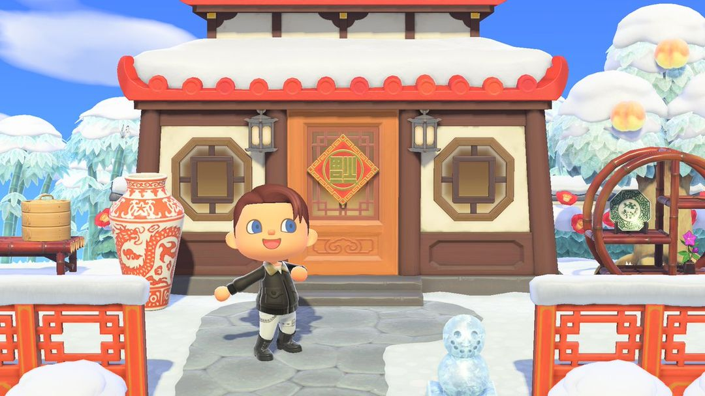
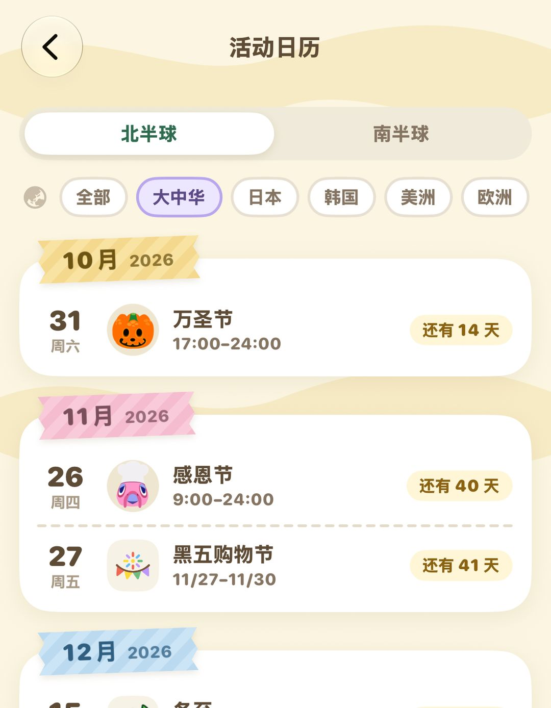

节日限定商品：Nook购物一年到头卖什么
春节、端午、七夕、中秋这些小节日，在狸端机上买限定家具
万圣节、圣诞节这些大节日，岛上会热热闹闹办一场活动。除此之外，游戏里还藏着四十多个小节日：春节、端午、七夕、中秋，也有情人节、圆周率日、亡灵节。它们不在岛上办活动，只在 Nook购物 里限时上架一两件相关商品，一年就卖这么几天，错过了就得等第二年。
好在买起来不麻烦：在服务处的狸端机打开 Nook购物 下单，第二天就寄到。这些商品不分地区，全世界同一时间上架，标着「日本」「欧洲」的节日，国内玩家一样买得到。日期上也只有夏至、冬至分南北半球，其他节日两个半球都是同一天。下面先说怎么买，再按月份把一年的节日列出来。
01去哪买、怎么买
节日商品上架时，Nook购物 会寄信来提醒，看到信就可以去下单了。
在服务处的狸端机打开 Nook购物，限定商品就摆在里面。
在 Nook购物 累计买满 100 件，手机上会多出 Nook购物 App，人在外面也能随手下单，不用专门跑一趟服务处。
每人每天最多给自己买 5 件，第二天寄到信箱。一个节日如果有好几件想要的，记得算好分几天买。
这些商品是全世界同时卖的，不看主机地区。节日后面标的「日本」「韩国」「美洲」，只是说这个节日主要在哪里过，跟你买不买得到没有关系。
小提示2.0 之后，买过的限定商品会进目录，第二年到了日子能直接从目录再订。过了季，目录里会标着「季节限定」，这时候是买不了的。

春节限定的「春节门饰」（图：Nookipedia）
02一年里有哪些
每年日期固定的节日，表里直接写日期；跟着农历或复活节走的，每年日子都不一样，括号里写的是大概的规则。
| 月份 | 节日和商品 |
| 1 月 | 七草粥 1/5～7（七草粥）；大比赛 1/15～2/15（助威扩音器、美式足球地毯）；土拨鼠日 1/25～2/2（土拨鼠模型）；节分 1/25～2/3（撒豆组合） |
| 2 月 | 春节（农历，除夕前一天起卖 8 天）：春节门饰、春节红包；情人节 2/1～14：心形巧克力、心形玫瑰花束；威尼斯狂欢节（跟复活节走，1 月到 3 月初之间）：面具；女儿节 2/22～3/3：女儿节娃娃、纸灯笼 |
| 3 月 | 圆周率日 3/1～14（圆周率派，314 铃钱）；三叶草日 3/10～17（三叶草门牌、地毯等）；愚人节 3/26～4/1（放屁坐垫） |
| 4 月 | 植木日 4/1～10（连翘）；毕业舞会 4/1～30（舞会墙、地板、绶带）；地球日 4/15～22（帅气地球仪）；日本儿童节 4/26～5/5（鲤鱼旗） |
| 5 月 | 母亲节整月（康乃馨、感谢马克杯）；滚奶酪节（5 月下旬，每年日子略有不同） |
| 6 月 | 端午节（农历，卖到五月初五当天，共 10 天）：端午节粽子；国际儿童节 6/1～15：手工王冠、斗篷；婚礼季、父亲节整月；北半球夏至 6/15～21 |
| 7 月 | 日本七夕 7/1～7（七夕竹）；巴士底日 7/10～20；海之日；牛仔节 7/15～8/15 |
| 8 月 | 七夕（农历，卖到七月初七当天，共 10 天）：牛郎服、织女服；盂兰盆节 8/10～16；西红柿节 8/20～31 |
| 9 月 | 中秋节（农历，卖到八月十五当天，共 10 天）：月见团子、月饼、月之地毯；秋夕；葡萄丰收节整月 |
| 10～11 月 | 亡灵节 10/25～11/3（万寿菊装饰）；圣马丁节 11/1～11（手提灯笼）；七五三节 11/11～20（千岁糖） |
| 12 月 | 北半球冬至 12/15～22；跨年夜 12/22～31（跨年荞麦面、柏林果酱面包、12粒葡萄等）；新年 12/22～1/5（门松、镜饼、生肖摆饰） |
夏至和冬至在南半球是反过来的：南半球 6/15～21 是冬至，12/15～22 才是夏至。夏至卖五月柱、向日葵地毯、向日葵墨镜，冬至卖柚子浴、汤圆、极光墙（7,000 铃钱）。想要哪一样，看清自己岛在哪个半球再去等。
中秋节限定商品摆在院子里（图：Nookipedia）
03中国玩家熟悉的几个
春节卖春节门饰和春节红包。春节门饰 2,000 铃钱，挂在家门口很有年味；春节红包 500 铃钱，能把铃钱包进去送人。春节当天西施惠会在早上的广播里提一句，岛民也会跟你聊起过年。
端午节卖端午节粽子，1,000 铃钱。
七夕卖牛郎服和织女服，各 2,500 铃钱，和朋友一人一件正好凑成一对。
中秋节卖月见团子、月饼，各 1,100 铃钱，还有 2,000 铃钱的月之地毯，上面那张图就是中秋商品摆在院子里的样子。
冬至卖汤圆，1,000 铃钱。
新年每年换一只生肖摆饰，1,600 铃钱。每年 12 月 22 日到第二年 1 月 5 日卖，卖的是新一年的生肖。想集齐十二生肖，每年这段日子都别忘了去订。
注意生肖摆饰在 Nook购物 只卖当年那一只，目录里也只能在那段日子订。错过了的话，可以去巴猎岛找星薇去霉运（10,000 铃钱），第二天也可能寄来生肖摆饰。
04秋天的两个
亡灵节从 10 月 25 日卖到 11 月 3 日，卖的是万寿菊装饰，1,600 铃钱，每年都是这几天。
黑五购物节是 2.0 加进来的，每年从 11 月第四个星期五开始，一直到 11 月 30 日，这几天 Nook商店里的全部商品打 7 折。它正好和感恩节过后 Nook商店卖的感恩节商品撞在一起，想买感恩节家具的，赶在这几天下手更便宜。
另外，情人节当天西施惠和跟你要好的岛民会寄信来，信里附着心形巧克力或心形玫瑰花束。2.0 起，那天去鸽巢喝咖啡，老板端上来的是热巧克力。
想看每个节日哪天开始，动森圈圈的活动日历按南北半球列着，也能按地区筛。

动森圈圈的活动日历：选好半球和地区，列出接下来的节日和倒计时
动森圈圈 · 小程序和 iOS App 都搜「动森圈圈」